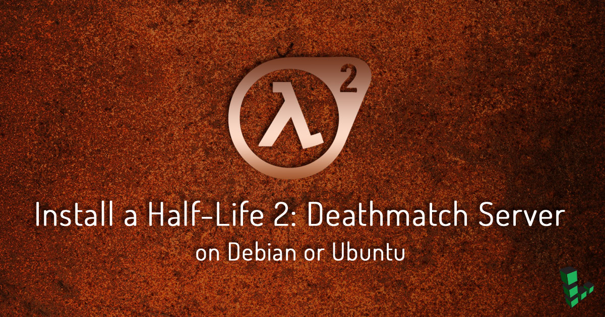

Install a Half-Life 2: Deathmatch Dedicated Server on Debian or Ubuntu
Updated by Linode Contributed by Davide Beatrici
Dedicated CPU instances are available!Linode's Dedicated CPU instances are ideal for CPU-intensive workloads like those discussed in this guide. To learn more about Dedicated CPU, read our blog post. To upgrade an existing Linode to a Dedicated CPU instance, review the Resizing a Linode guide.

This guide will show you how to set up your own Half-Life 2 Deathmatch server on a Linode running Debian or Ubuntu. Hl2 is a multiplayer, first-person shooter video game.
Before You Begin
Complete our Install SteamCMD for a Steam Game Server guide.
This guide is written for a non-root user. Commands that require elevated privileges are prefixed with
sudo. If you’re not familiar with thesudocommand, see the Users and Groups guide.Add two firewall rules to extend the port range available to the server. This command assumes that you have only the iptables rules in place from the SteamCMD guide. If not, find the corresponding lines and replace the numbers in
INPUT 5andINPUT 7below:sudo iptables -R INPUT 5 -p udp -m udp --sport 27000:27030 --dport 1025:65355 -j ACCEPT sudo iptables -I INPUT 7 -p udp -m udp --dport 27000:27030 -j ACCEPT
Install Server Using SteamCMD
Execute
steamcmd:steamcmdLogin as
anonymous:login anonymousDownload the server:
app_update 232370 validateExit from SteamCMD:
quit
Occasionally, SteamCMD encounters an unreported error, but completes successfully. If the steps in the Run the Server section are not successful, repeat the installation process to retrieve all of the game data, then run the server again.
Run the Steam Server
cdinto the server folder:cd .steam/SteamApps/common/Half-Life\ 2\ Deathmatch\ Dedicated\ Server/Run the server:
./srcds_run -game hl2mp +sv_password MyLinode +mp_teamplay 1 +maxplayers 8 +map dm_runoffIn the above command:
game: The game’s files directory. This is the only parameter you can’t write inserver.cfgbecause it specifies the game folder, where theserver.cfgfile itself is.sv_password: Password required to enter your server. If this parameter is not set, the server is accessible without a password.mp_teamplay: Specifies whether the game mode is team deathmatch or deathmatch.maxplayers: Maximum number of simultaneous players allowed on the server. Half-Life 2: Deathmatch officially supports a maximum of 16 players.map: The map with which to start the server. Write the name of the map file without the.bspextension.For more parameter options, visit the Valve Wiki.
Stop the Server
To stop the server, hold the CTRL key on your keyboard and press C (CTRL+C). The output will resemble:
Thu Jul 25 04:06:48 CEST 2017: Server Quit
Forcibly killing the server shouldn’t be harmful, but it can cause data corruption if you have plug-ins which write to a database.
Run the Server Within a Screen Socket
To keep the server running in the background, execute it using Screen:
screen ./srcds_run -game hl2mp +sv_password MyLinode +mp_teamplay 1 +maxplayers 8 +map dm_runoff
To exit the screen:
exit
For more information on Screen sockets, visit our guide on Screen.
Autostart with a Screen Script
This script automatically starts your server in a Screen session.
Create the script:
- ~/.steam/SteamApps/common/Half-Life 2 Deathmatch Dedicated Server/run.sh
-
1 2 3 4#!/bin/sh cd "$HOME/.steam/SteamApps/common/Half-Life 2 Deathmatch Dedicated Server" screen -S "HL2DM" -d -m screen -r "HL2DM" -X stuff "./srcds_run -game hl2mp +sv_password MyLinode +mp_teamplay 1 +maxplayers 8 +map dm_runoff\n"
Mark the file as executable:
chmod +x run.shRun the script:
./run.sh
Configure the Half-Life 2 Server
The server.cfg file contains the settings of your server. It is not present by default because you can start the server using the parameters from the command line.
Note that if server.cfg is present, its settings override any parameters that are set when you start the server through the command line.
Below is a sample server configuration:
- ~/.steam/SteamApps/common/Half-Life 2 Deathmatch Dedicated Server/hl2mp/cfg/server.cfg
-
1 2 3 4 5 6 7 8 9 10 11 12 13 14 15 16 17 18 19 20 21 22 23 24 25 26 27 28 29 30 31 32 33 34 35 36 37 38 39 40 41 42 43 44 45 46 47 48 49 50 51 52 53 54 55 56 57 58 59 60 61 62 63 64 65 66 67 68// Server name [Default: Half-Life 2 Deathmatch] hostname "My Linode" // Frags limit before ending the match (0 = No limit) [Default: 0] mp_fraglimit 50 // Time limit before ending the match (0 = No limit) [Default: 0] mp_timelimit 30 // Team deathmatch mode [Default: 0] mp_teamplay 0 // Allow friendly fire [Default: 0] mp_friendlyfire 0 // Automatically respawn a player after death [Default: 0] mp_forcerespawn 1 // Enable player footstep sounds [Default: 1] mp_footsteps 1 // Enable flashlight [Default: 0] mp_flashlight 1 // Allow spectators [Default: 1] mp_allowspectators 1 // Amount of damage inflicted from a fall [Default: 0] mp_falldamage 10 // Weapons respawn time [Default: 20] sv_hl2mp_weapon_respawn_time 10 // Items (health, energy, ammo, props...) respawn time [Default: 30] sv_hl2mp_item_respawn_time 15 // Enable voice on server [Default: 1] sv_voiceenable 1 // Talk to everyone (1) or only to your team (0)? [Default: 0] sv_alltalk 1 // Allow players to upload sprays [Default: 1] sv_allowupload 1 // Allow sprays, custom maps and other extra content to be downloaded [Default: 1] sv_allowdownload 1 // Max bandwidth rate allowed on server (0 = No limit) [Default: 0] sv_maxrate 0 // Minimum bandwidth rate allowed on server, (0 = No limit) [Default: 3500] sv_minrate 3500 // Maximum updates per second that the server allows [Default: 66] sv_maxupdaterate 300 // Minimum updates per second that the server allows [Default: 10] sv_minupdaterate 10 // After how many seconds without a message should the client be disconnected? (0 = Disabled) [Default: 65] sv_timeout 65 // LAN mode (only class C addresses allowed) [Default: 0] sv_lan 0 // Server password for players to join [Default: Empty] sv_password "MyLinode"
Custom Half-Life 2 Maps
There are eight (8) official maps in Half-Life 2: Deathmatch. A preview of each map is available on Combine OverWiki’s official page:
- dm_lockdown
- dm_overwatch
- dm_powerhouse
- dm_resistance
- dm_runoff
- dm_steamlab
- dm_underpass
- halls3
Half-Life 2 Deathmatch requires that custom maps be in specific locations based on their type:
VPK:
~/.steam/SteamApps/common/Half-Life 2 Deathmatch Dedicated Server/hl2mp/customBSP:
~/.steam/SteamApps/common/Half-Life 2 Deathmatch Dedicated Server/hl2mp/custom/maps
The resources-upload system is enabled by default, and any player who doesn’t have the selected map will automatically download it and any required extra content from your server. Check GAMEBANANA for additional custom maps.
Maps Rotation
When a match ends, the server starts a new match with the next map in the rotation list.
If mapcycle.txt is not available, the system uses the default map rotation list in mapcycle_default.txt.
- ~/.steam/SteamApps/common/Half-Life 2 Deathmatch Dedicated Server/hl2mp/cfg/mapcycle_default.txt
-
1 2 3 4 5 6 7 8 9 10 11 12 13 14 15// Default mapcycle file for hl2mp // // DO NOT MODIFY THIS FILE! // Instead, copy it to mapcycle.txt and modify that file. If no custom mapcycle.txt file is found, // this file will be used as the default. // // Also, note that the "mapcyclefile" convar can be used to specify a particular mapcycle file. dm_lockdown dm_overwatch dm_powerhouse dm_resistance dm_runoff dm_steamlab dm_underpass
To add a custom map to the rotation:
Copy
mapcycle_default.txttomapcycle.txt:cp hl2mp/cfg/mapcycle_default.txt hl2mp/cfg/mapcycle.txtWrite the custom map’s name inside
mapcycle.txt. For example: if you have the mapdm_custom.bsp:
- ~/.steam/SteamApps/common/Half-Life 2 Deathmatch Dedicated Server/hl2mp/cfg/mapcycle.txt
-
1 2 3 4 5 6 7 8 9 10 11 12 13 14 15 16// Default mapcycle file for hl2mp // // DO NOT MODIFY THIS FILE! // Instead, copy it to mapcycle.txt and modify that file. If no custom mapcycle.txt file is found, // this file will be used as the default. // // Also, note that the "mapcyclefile" convar can be used to specify a particular mapcycle file. dm_custom // Your custom map dm_lockdown dm_overwatch dm_powerhouse dm_resistance dm_runoff dm_steamlab dm_underpass
Play Half-Life 2 on your Own Server
Open Half-Life 2 Deathmatch, and click FIND SERVERS:
Find your server in the servers list:
Double click on it to connect:
{kind=link}
{kind=link}
{kind=link}
More Information
You may wish to consult the following resources for additional information on this topic. While these are provided in the hope that they will be useful, please note that we cannot vouch for the accuracy or timeliness of externally hosted materials.
Join our Community
Find answers, ask questions, and help others.
This guide is published under a CC BY-ND 4.0 license.